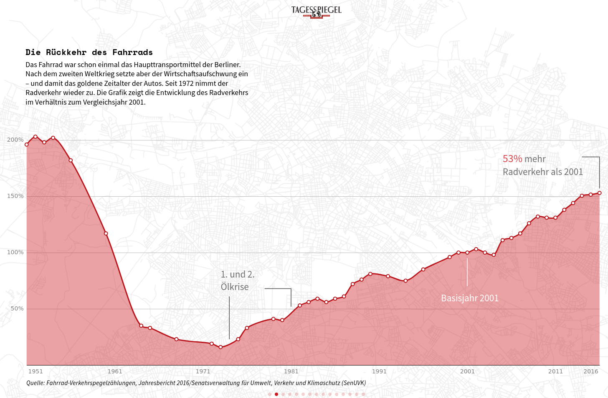
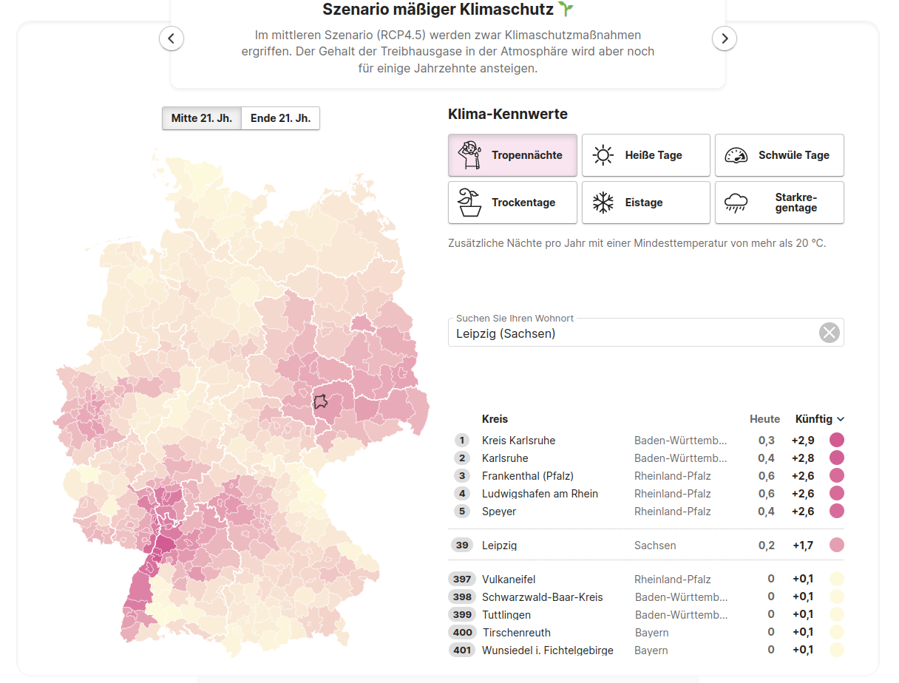

Datenjournalismus in Python -
Contents
Datenjournalismus in Python -#
Eine praktische Einführung in die Programmierung#
Natalie Widmann#
Wintersemester 2022 / 2023
Universität Leipzig
Agenda#
Kurs: Ziele & Organisation
Motivation - Warum überhaupt programmieren lernen?
Python als Taschenrechner - Oder wie reich ist Jeff Bezos?
Von der Praxis zur Theorie
Variablen
Datentypen
Inbuilt Functions
Fehlermeldungen
Motivation - Warum überhaupt programmieren lernen?#
Daten als Grundlage für Journalismus#
Journalismus basiert fast immer auf Daten. Manchmal sind es nur einzelne Zahlen. Aber immer öfter Daten helfen uns:
Trends zu verstehen
Dimensionen greifbar zu machen
Ereignisse in Kontext zu setzen
in Interaktion mit Leser:innen zu treten



Daten, Daten, Daten#
Manchmal ist die Datenflut so überwältigend, dass Recherchen nur mit technischen Mitteln möglich sind.
Paradise Paper#
21 verschiedene Datenquellen
ca. 13,4 Millionen Dokumente oder 1,4 Terrabyte an Daten
mehr als 380 Journalist:innen aus 67 Ländern

Direkte Auswertung & Schnelles Prototyping#
Auch wenn ihr ein Team mit Entwickler:innen, Designer:innen und Co habt, könnt ihr Ideen schnell ausprobieren, Stichprobendaten auswerten und euer Team davon überzeugen.
Digitale Produktentwicklung#
Aufwände abschätzen
Gemeinsame Sprache mit Entwickler:innen
Möglichkeiten kennen und kreativ sein#
Machinelles Lernen als Hilfsmittel in der Recherche
Algortihmischen Bias aufdecken
aktueller Stand von Deep Fake Technologie

https://interaktiv.br.de/falsche-google-bewertungen/

https://www.buzzfeednews.com/article/peteraldhous/hidden-spy-planes

https://www.propublica.org/article/machine-bias-risk-assessments-in-criminal-sentencing

Python#
Python wurde 1991 von Guido van Rossom veröffentlicht und ist mittlerweile eine der beliebtesten Programmiersprachen. Gründe dafür sind:
die Vielseitigkeit - von Datenanalyse und Visualisierung über Webentwicklung bis hin zu maschinellem Lernen
die Einfachheit - Python ist übersichtlich und leicht zu lernen.
Open Source Community - die aktive Community behebt Fehler, entwickelt Python stets weiter und hilft bei Problemen

Unser erster Code#
print('Hello World!')
Hello World!
Python als Taschenrechner#
Python kann als einfacher Taschenrechner verwendet werden.
Die Syntax:
Die Operatoren +, -, * und / werden wie gewohnt verwendet
Mit ** wird potenziert
Mit Klammern werden Ausdrücke gruppiert
Mit # beginnt ein Kommentar. Kommentare dienen beschreiben de Code und werden nicht ausgeführt
# Addition
5 + 6
11
# Subtraktion
20 - 4
16
# Multiplikation
2 * 6
12
# Division
9 / 2
4.5
# Potenzieren
2 ** 3
8
# Mit Klammern
(4 + (2 * 3)) * 2
20

Wie reich ist Jeff Bezos?#
Mit 150 Mrd. USD ist Jeff Bezos auf Platz 4 der reichsten Menschen der Welt.
Beispiele#
Grafik links: Datenvisualisierung von Mona Chalabi in 9 Ways to Imagine Jeff Bezos’ Wealth der New York Times, April 2022.
1 Pixel Wealth: https://mkorostoff.github.io/1-pixel-wealth/
Hands On - Jeff Bezos Wealth#
Wie lange muss man arbeiten um so reich zu werden?#
Mit einem deutschen Durchschnittseinkommen?
Das aktuelle monatliche Durchschnittseinkommen beträgt 4100 Euro brutto bei einer Vollzeitstelle. Für eine Person in Steuerklasse I läuft das auf ca. 1588 Euro netto hinaus.
# 1. Schritt: USD in € umrechnen (Kurs: 1,03)
print(150000000000 * 1.03)
154500000000.0
# 1. Schritt: USD in € umrechnen (Kurs: 1,03)
vermoegen_in_usd = 150000000000
kurs = 1.03
vermoegen = vermoegen_in_usd * kurs
print(vermoegen)
154500000000.0
# 2. Schritt: Von Monatsgehalt auf durchschnittliches Jahreseinkommen
netto_pro_monat = 1588
einkommen = 12 * netto_pro_monat
print(einkommen)
19056
# 3. Schritt: Berechnung der Arbeitszeit in Jahren
jahre = vermoegen/ einkommen
print(jahre)
8107682.619647355
Die Welt vor 8 Millionen Jahren…#

Vor 8 Millionen Jahren gab es noch keine Menschen auf der Erde. Das Suptropische Klima in Europa kühlt langsam ab und damit sterben auch die meisten europäischen Arten der Menschenartigen aus. Einzig der Oreopithecus überlebt vorest auf einer Insel bei Sardinien/Korsika
Quelle: http://www.oteripedia.de/Neogen

In Südamerika existiert der größte Vogel, der jemals auf der Erde lebte. Der Argentavis magnificens ist wahrscheinlich mit dem Geier verwandt und hat eine Flügelspannweite von 7,20 Metern. Er ist doppelt so groß wie der größte heutige Vogel, der Andenkondor mit 3,30 Metern Flügelspannweite. Die Flügelfläche des Argentavis magnificens beträgt 7 Quadratmeter. Der Vogel wiegt 70-78 Kilogramm.
Wie lange dauert es als Top Manager#
# Wie lange dauert es als Top-Manager so viel Geld anzuhäufen?
einkommen = 100000
jahre = vermoegen/ einkommen
print(jahre)
1545000.0
Die Welt vor 1,5 Millionen Jahren#
Im heutigen Kenia lebt der Homo erectus. Er benutzt Faustkeile und ist wahrscheinlich in der Lage Feuer zu machen.
Bis er Europa erreicht vergehen weitere 300.000 Jahre.
Zurück zu Jeff Bezos: Was macht man mit so viel Geld?#
vermoegen = 154500000000
# Wie oft könnte er das Banksy's geschreddertes Bild mit Wert von ca. 18,89 Millionen Euro kaufen?
kosten_banksy = 18890000
anzahl = vermoegen / kosten_banksy
print(anzahl)
8178.930651138168
# Wie viele Boeing 737-700 zum Preis von 76 Millionen kann er kaufen?
kosten_boeing737 = 76000000
anzahl = vermoegen / kosten_boeing737
print(anzahl)
2032.8947368421052
Eine kleines Programm dafür…#
# Wie oft kann Jeff sich X kaufen
vermoegen = 154500000000
dinge = input('Dinge: ')
kosten = input('Kosten:')
anzahl = vermoegen / float(kosten)
antwort = f'Bezos kann sich {anzahl} {ding} zum Preis von {kosten} € kaufen.'
print(antwort)
---------------------------------------------------------------------------
StdinNotImplementedError Traceback (most recent call last)
Input In [15], in <cell line: 4>()
1 # Wie oft kann Jeff sich X kaufen
2 vermoegen = 154500000000
----> 4 dinge = input('Dinge: ')
5 kosten = input('Kosten:')
7 anzahl = vermoegen / float(kosten)
File ~/.local/lib/python3.8/site-packages/ipykernel/kernelbase.py:1174, in Kernel.raw_input(self, prompt)
1167 """Forward raw_input to frontends
1168
1169 Raises
1170 ------
1171 StdinNotImplementedError if active frontend doesn't support stdin.
1172 """
1173 if not self._allow_stdin:
-> 1174 raise StdinNotImplementedError(
1175 "raw_input was called, but this frontend does not support input requests."
1176 )
1177 return self._input_request(
1178 str(prompt),
1179 self._parent_ident["shell"],
1180 self.get_parent("shell"),
1181 password=False,
1182 )
StdinNotImplementedError: raw_input was called, but this frontend does not support input requests.
Von der Praxis zur Theorie….#
Variablen#
Eine Variable ist die Zuweisung eines Wertes zu einem Namen.
<name> = <wert>
pi = 3.141592
print(pi)
Variablen können sich ändern:
favourite_fruit = "banana"
print(favourite_fruit)
favourite_fruit = "strawberry"
print(favourite_fruit)
vermoegen = 1200
kosten_fahrrad = 300
vermoegen = vermoegen - kosten_fahrrad
print(vermoegen)
Variablenamen - Regeln & praktische Tipps#
Variablennamen sollten verständlich und aussagekräftig sein
Variablennamen beginnen immer mit einem Buchstaben oder Unterstrich
Der Rest des Variablennamens besteht aus Buchstaben, Zahlen oder Unterstrichen
Variablennamen sind casesensitive (Groß- und Kleinschreibung wird unterschieden)
Variablennamen können eingebaute Funktionen überscheiben. Daher immer einzigartige, eigenständige Namen verwenden
Variablennamen sollten verständlich und aussagekräftig sein
X = 40075.017
print(X)
erdumfang = 40075.017
print(erdumfang)
Variablennamen beginnen immer mit einem Buchstaben oder Unterstrich
€ = 172
print(€)
euro = 172
print(euro)
10 = 'zehn'
_10 = 'zehn'
Der Rest des Variablennamens kann aus Buchstaben, Zahlen oder Unterstrichen zusammengesetzt sein
student_883245_geburtstag = "03.09.1996"
student_$10_geburtstag = "21.02.2001"
Variablennamen sind casesensitive (Groß- und Kleinschreibung wird unterschieden)
name = "Gundula"
print(Name)
Variablennamen können eingebaute Funktionen überscheiben. Daher immer einzigartige, eigenständige Namen verwenden
x = 3
y = 7
x = x + y
z = x - 7
print(z)
help(print)
print = "ACHTUNG - Variabelname entspricht dem Namen einer eingebauten Funktion"
print(print)
help(print)
Datentypen#
int - Integer (ganze Zahl) bspw. 4, -72, 12947
float - Float (Gleitkommazahl) bspw. 3.2, 4.9813, -2.3, 4.0
string - String bspw. ‘Hello’, “vorname nachname!”
bool- Boolean: True oder False
a = 2
b = 300
c = -12
d = 90348752
type(a)
a + b
type(d / a)
Eingebaute Funktionen#
sind fester Bestandteil der Programmiersprache
Die folgenden Funktionen haben wir schon kennengelernt:
print - zeigt den Wert einer Variable in der Konsole
input - nimmt Input von Nutzer:innen entgegen
type - gibt den Datentyp einer Variabel oder eines Objektes zurück
help - Beschreibung einer Funktion
help(print)
Help on built-in function print in module builtins:
print(...)
print(value, ..., sep=' ', end='\n', file=sys.stdout, flush=False)
Prints the values to a stream, or to sys.stdout by default.
Optional keyword arguments:
file: a file-like object (stream); defaults to the current sys.stdout.
sep: string inserted between values, default a space.
end: string appended after the last value, default a newline.
flush: whether to forcibly flush the stream.
help(3)
Help on int object:
class int(object)
| int([x]) -> integer
| int(x, base=10) -> integer
|
| Convert a number or string to an integer, or return 0 if no arguments
| are given. If x is a number, return x.__int__(). For floating point
| numbers, this truncates towards zero.
|
| If x is not a number or if base is given, then x must be a string,
| bytes, or bytearray instance representing an integer literal in the
| given base. The literal can be preceded by '+' or '-' and be surrounded
| by whitespace. The base defaults to 10. Valid bases are 0 and 2-36.
| Base 0 means to interpret the base from the string as an integer literal.
| >>> int('0b100', base=0)
| 4
|
| Built-in subclasses:
| bool
|
| Methods defined here:
|
| __abs__(self, /)
| abs(self)
|
| __add__(self, value, /)
| Return self+value.
|
| __and__(self, value, /)
| Return self&value.
|
| __bool__(self, /)
| self != 0
|
| __ceil__(...)
| Ceiling of an Integral returns itself.
|
| __divmod__(self, value, /)
| Return divmod(self, value).
|
| __eq__(self, value, /)
| Return self==value.
|
| __float__(self, /)
| float(self)
|
| __floor__(...)
| Flooring an Integral returns itself.
|
| __floordiv__(self, value, /)
| Return self//value.
|
| __format__(self, format_spec, /)
| Default object formatter.
|
| __ge__(self, value, /)
| Return self>=value.
|
| __getattribute__(self, name, /)
| Return getattr(self, name).
|
| __getnewargs__(self, /)
|
| __gt__(self, value, /)
| Return self>value.
|
| __hash__(self, /)
| Return hash(self).
|
| __index__(self, /)
| Return self converted to an integer, if self is suitable for use as an index into a list.
|
| __int__(self, /)
| int(self)
|
| __invert__(self, /)
| ~self
|
| __le__(self, value, /)
| Return self<=value.
|
| __lshift__(self, value, /)
| Return self<<value.
|
| __lt__(self, value, /)
| Return self<value.
|
| __mod__(self, value, /)
| Return self%value.
|
| __mul__(self, value, /)
| Return self*value.
|
| __ne__(self, value, /)
| Return self!=value.
|
| __neg__(self, /)
| -self
|
| __or__(self, value, /)
| Return self|value.
|
| __pos__(self, /)
| +self
|
| __pow__(self, value, mod=None, /)
| Return pow(self, value, mod).
|
| __radd__(self, value, /)
| Return value+self.
|
| __rand__(self, value, /)
| Return value&self.
|
| __rdivmod__(self, value, /)
| Return divmod(value, self).
|
| __repr__(self, /)
| Return repr(self).
|
| __rfloordiv__(self, value, /)
| Return value//self.
|
| __rlshift__(self, value, /)
| Return value<<self.
|
| __rmod__(self, value, /)
| Return value%self.
|
| __rmul__(self, value, /)
| Return value*self.
|
| __ror__(self, value, /)
| Return value|self.
|
| __round__(...)
| Rounding an Integral returns itself.
| Rounding with an ndigits argument also returns an integer.
|
| __rpow__(self, value, mod=None, /)
| Return pow(value, self, mod).
|
| __rrshift__(self, value, /)
| Return value>>self.
|
| __rshift__(self, value, /)
| Return self>>value.
|
| __rsub__(self, value, /)
| Return value-self.
|
| __rtruediv__(self, value, /)
| Return value/self.
|
| __rxor__(self, value, /)
| Return value^self.
|
| __sizeof__(self, /)
| Returns size in memory, in bytes.
|
| __sub__(self, value, /)
| Return self-value.
|
| __truediv__(self, value, /)
| Return self/value.
|
| __trunc__(...)
| Truncating an Integral returns itself.
|
| __xor__(self, value, /)
| Return self^value.
|
| as_integer_ratio(self, /)
| Return integer ratio.
|
| Return a pair of integers, whose ratio is exactly equal to the original int
| and with a positive denominator.
|
| >>> (10).as_integer_ratio()
| (10, 1)
| >>> (-10).as_integer_ratio()
| (-10, 1)
| >>> (0).as_integer_ratio()
| (0, 1)
|
| bit_length(self, /)
| Number of bits necessary to represent self in binary.
|
| >>> bin(37)
| '0b100101'
| >>> (37).bit_length()
| 6
|
| conjugate(...)
| Returns self, the complex conjugate of any int.
|
| to_bytes(self, /, length, byteorder, *, signed=False)
| Return an array of bytes representing an integer.
|
| length
| Length of bytes object to use. An OverflowError is raised if the
| integer is not representable with the given number of bytes.
| byteorder
| The byte order used to represent the integer. If byteorder is 'big',
| the most significant byte is at the beginning of the byte array. If
| byteorder is 'little', the most significant byte is at the end of the
| byte array. To request the native byte order of the host system, use
| `sys.byteorder' as the byte order value.
| signed
| Determines whether two's complement is used to represent the integer.
| If signed is False and a negative integer is given, an OverflowError
| is raised.
|
| ----------------------------------------------------------------------
| Class methods defined here:
|
| from_bytes(bytes, byteorder, *, signed=False) from builtins.type
| Return the integer represented by the given array of bytes.
|
| bytes
| Holds the array of bytes to convert. The argument must either
| support the buffer protocol or be an iterable object producing bytes.
| Bytes and bytearray are examples of built-in objects that support the
| buffer protocol.
| byteorder
| The byte order used to represent the integer. If byteorder is 'big',
| the most significant byte is at the beginning of the byte array. If
| byteorder is 'little', the most significant byte is at the end of the
| byte array. To request the native byte order of the host system, use
| `sys.byteorder' as the byte order value.
| signed
| Indicates whether two's complement is used to represent the integer.
|
| ----------------------------------------------------------------------
| Static methods defined here:
|
| __new__(*args, **kwargs) from builtins.type
| Create and return a new object. See help(type) for accurate signature.
|
| ----------------------------------------------------------------------
| Data descriptors defined here:
|
| denominator
| the denominator of a rational number in lowest terms
|
| imag
| the imaginary part of a complex number
|
| numerator
| the numerator of a rational number in lowest terms
|
| real
| the real part of a complex number
Fehlermeldungen#
Direktes Feedback dass meist recht genau sagt wo der Fehler liegt:
print "zwanzig"
'zehn' + 3
1_variable = 'wert'
Praxis Tipps#
#1 Üben, Üben, Üben#
#2 Fehler helfen beim Lernen#
#3 Lest die Fehlermeldungen#
#4 Tauscht euch aus#
def hide_code_in_slideshow():
from IPython import display
import binascii
import os
uid = binascii.hexlify(os.urandom(8)).decode()
html = """<div id="%s"></div>
<script type="text/javascript">
$(function(){
var p = $("#%s");
if (p.length==0) return;
while (!p.hasClass("cell")) {
p=p.parent();
if (p.prop("tagName") =="body") return;
}
var cell = p;
cell.find(".input").addClass("hide-in-slideshow")
});
</script>""" % (uid, uid)
display.display_html(html, raw=True)
hide_code_in_slideshow()